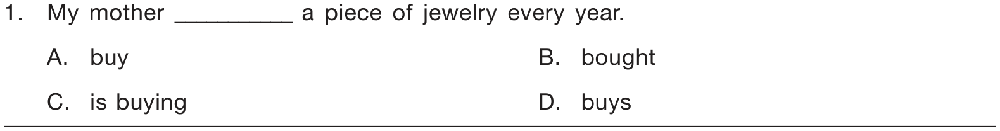
FOR QUESTIONS 1 TO 7, CHOOSE THE CORRECT OPTION TO FILL IN THE BLANK.
My mother ___________ a piece of jewelry every year.
buy
bought
is buying
buys
The suitable verb form “buys” is to be used with the singular subject (mother) to describe a habitual action, as indicated by the phrase “every year”.
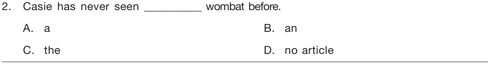
FOR QUESTIONS 1 TO 7, CHOOSE THE CORRECT OPTION TO FILL IN THE BLANK.
Casie has never seen ___________ wombat before.
a
an
the
no article
The indefinite article “a” is to be used before the word (wombat) that starts with a consonant.
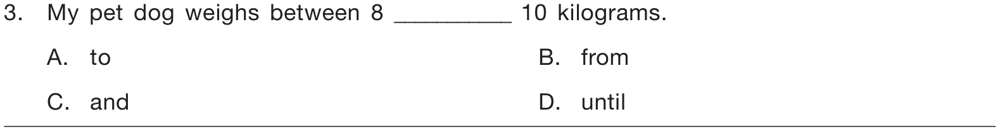
FOR QUESTIONS 1 TO 7, CHOOSE THE CORRECT OPTION TO FILL IN THE BLANK.
My pet dog weighs between 8 ___________ 10 kilograms.
to
from
and
until
The conjunction “and” is to be used to join the different parts of the same thing (kilograms) in the sentence.
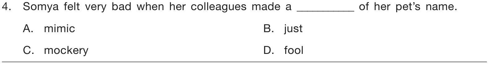
FOR QUESTIONS 1 TO 7, CHOOSE THE CORRECT OPTION TO FILL IN THE BLANK.
Somya felt very bad when her colleagues made a ___________ of her pet’s name.
mimic
just
mockery
fool
The suitable noun “mockery” is to be used in the sentence, as it means “insulting or making fun of someone” in the sentence.
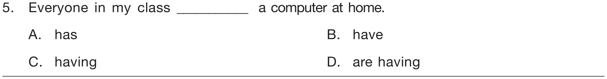
FOR QUESTIONS 1 TO 7, CHOOSE THE CORRECT OPTION TO FILL IN THE BLANK.
Everyone in my class ___________ a computer at home.
has
have
having
are having
The suitable verb form “has” is to be used with the singular pronoun “everyone” in the sentence.
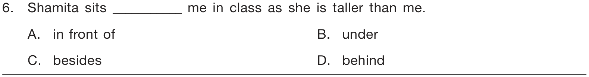
FOR QUESTIONS 1 TO 7, CHOOSE THE CORRECT OPTION TO FILL IN THE BLANK.
Shamita sits ___________ me in class as she is taller than me.
in front of
under
besides
behind
The appropriate preposition “behind” is to be used to state the position of somebody (me) to the back of somebody (Shamita) in the sentence.
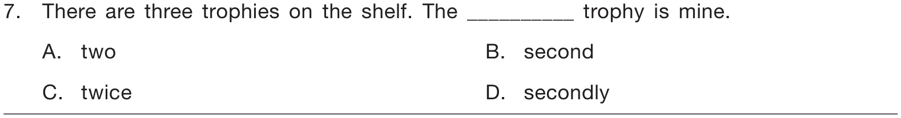
FOR QUESTIONS 1 TO 7, CHOOSE THE CORRECT OPTION TO FILL IN THE BLANK.
There are three trophies on the shelf. The __________ trophy is mine.
two
second
twice
secondly
The suitable numeral adjective “second” is to be used to describe the noun “trophy” in the sentence.
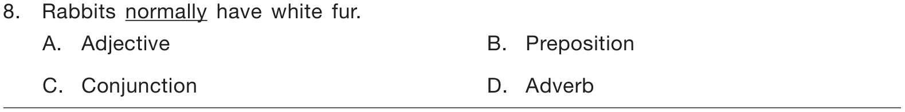
FOR QUESTIONS 8 AND 9, CHOOSE THE CORRECT OPTION FOR THE UNDERLINED WORD.
Adjective
Preposition
Conjunction
Adverb
The underlined word “normally” is an adverb. It is used to modify the action of having white fur in the sentence.
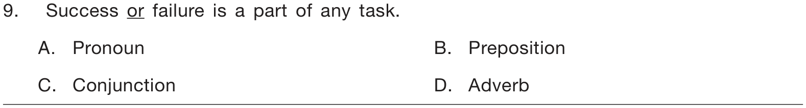
FOR QUESTIONS 8 AND 9, CHOOSE THE CORRECT OPTION FOR THE UNDERLINED WORD.
Pronoun
Preposition
Conjunction
Adverb
The underlined word “or” is a conjunction. It is used to connect two alternatives, “success” and “failure”, in the sentence.
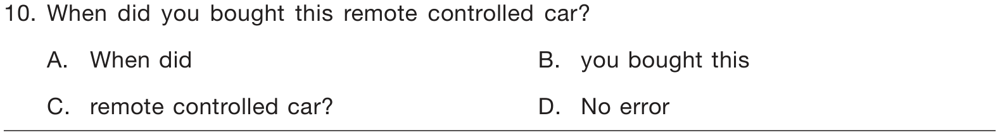
FOR QUESTIONS 10 AND 11, CHOOSE THE PART OF THE SENTENCE THAT HAS AN ERROR.
When did you bought this remote controlled car?
When did
you bought this
remote controlled car?
No error
The correct sentence is: When did you buy this remote controlled car?
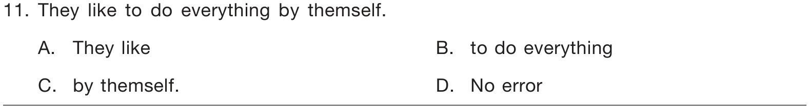
FOR QUESTIONS 10 AND 11, CHOOSE THE PART OF THE SENTENCE THAT HAS AN ERROR.
They like to do everything by themself.
They like
to do everything
by themself.
No error
The correct sentence is: They like to do everything by themselves.
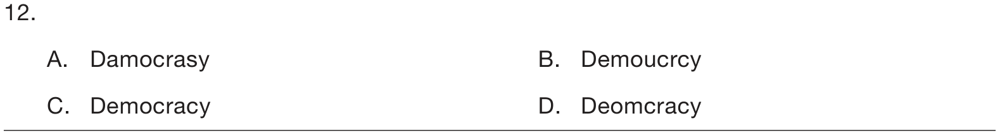
FOR QUESTIONS 12 AND 13, CHOOSE THE OPTION WITH CORRECT SPELLING.
Damocrasy
Demoucrcy
Democracy
Deomcracy
The correct spelling is “democracy”, which means “a system in which the government of a country is elected by the people”.
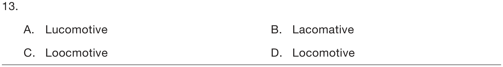
FOR QUESTIONS 12 AND 13, CHOOSE THE OPTION WITH CORRECT SPELLING.
Lucomotive
Lacomative
Loocmotive
Locomotive
The correct spelling is “locomotive”, which means “the engine of a train”.
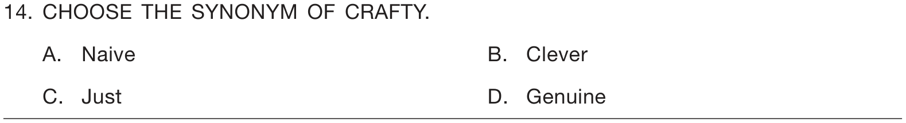
CHOOSE THE SYNONYM OF CRAFTY.
Naive
Clever
Just
Genuine
The synonym of the word “crafty” is “clever”, as they both mean “skilful”.
CHOOSE THE ANTONYM OF DISASTER.
Accident
Defeat
Miracle
Rough
The antonym of the word “disaster” is “miracle”. The word “disaster” means “an event causing great damage or suffering”, and the word “miracle” means “an extremely outstanding or wonderful event”.
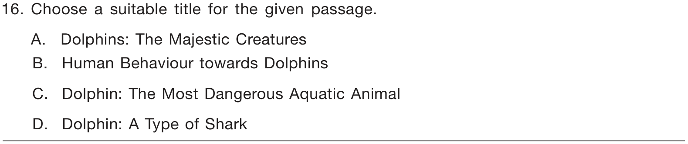
FOR QUESTIONS 16 TO 20, READ THE PASSAGE AND ANSWER THE QUESTIONS THAT FOLLOW.
Dolphins are the most beautiful, graceful, and majestic creatures to come across. They have a very friendly attitude, especially towards humans, which makes them the most likeable among all.
Dolphins are of various kinds. They are a diverse group of mammals. The most famous of all dolphins is the killer whale, and it is the most humongous of all dolphins. It has a length of about 31 feet and weighs about 10 tons. Its huge size makes it an easy predator.
Dolphins are social creatures. They are not lonesome. Their attributes are not those of a lone wolf but of a family. They live together and travel together almost their entire lives. They travel together in large swarms called pods. Each pod has different characteristics and features unique to that particular pod.
Dolphins savour smaller fish for their food. But their meals are varied and they are not just limited to fish. The diets of dolphins vary for each species. Some dolphins consume fish while others eat creatures like squids. Large mammals like killer whales prey on big and strong creatures like sea lions or seals.
Dolphins hunt together in pods using techniques like hunting wherein the dolphins surround the prey from all sides and hold it captive. Then these dolphins take turns preying on the captured prey, for filling their hunger.
Dolphins are majestic when it comes to acrobatics or gymnastics. It is just breath- taking to see them up in the air and spin. They are avid lovers of jumping around and playing. Sometimes, dolphins are seen performing tricks with their pods. They form beautiful patterns that leave the viewers mesmerized by their traits and antics. Dolphins have incredulous eyesight and hearing powers. This is why they are very aware of their surroundings. Also, their excellent senses make it hard for predators like humans to catch them easily. They use the technique of echolocation to hear underwater.
Dolphins are very fascinating creatures, and there is a lot one can be intrigued by when wondering about dolphins. They are mammals. Hence, the dolphins nurse their kids with their milk in the early stages so that the calves are healthy and strong. Dolphins are intelligent individuals who are capable of understanding and processing complex commands successfully. Many species of dolphins are protected to avoid their endangerment or extinction.
Choose a suitable title for the given passage.
Dolphins: The Majestic Creatures
Human Behaviour towards Dolphins
Dolphin: The Most Dangerous Aquatic Animal
Dolphin: A Type of Shark
The suitable title for the given passage is “Dolphins: The Majestic Creatures”.
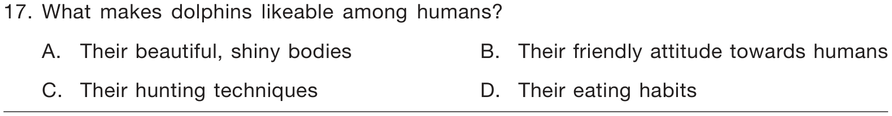
FOR QUESTIONS 16 TO 20, READ THE PASSAGE AND ANSWER THE QUESTIONS THAT FOLLOW.
Dolphins are the most beautiful, graceful, and majestic creatures to come across. They have a very friendly attitude, especially towards humans, which makes them the most likeable among all.
Dolphins are of various kinds. They are a diverse group of mammals. The most famous of all dolphins is the killer whale, and it is the most humongous of all dolphins. It has a length of about 31 feet and weighs about 10 tons. Its huge size makes it an easy predator.
Dolphins are social creatures. They are not lonesome. Their attributes are not those of a lone wolf but of a family. They live together and travel together almost their entire lives. They travel together in large swarms called pods. Each pod has different characteristics and features unique to that particular pod.
Dolphins savour smaller fish for their food. But their meals are varied and they are not just limited to fish. The diets of dolphins vary for each species. Some dolphins consume fish while others eat creatures like squids. Large mammals like killer whales prey on big and strong creatures like sea lions or seals.
Dolphins hunt together in pods using techniques like hunting wherein the dolphins surround the prey from all sides and hold it captive. Then these dolphins take turns preying on the captured prey, for filling their hunger.
Dolphins are majestic when it comes to acrobatics or gymnastics. It is just breath- taking to see them up in the air and spin. They are avid lovers of jumping around and playing. Sometimes, dolphins are seen performing tricks with their pods. They form beautiful patterns that leave the viewers mesmerized by their traits and antics. Dolphins have incredulous eyesight and hearing powers. This is why they are very aware of their surroundings. Also, their excellent senses make it hard for predators like humans to catch them easily. They use the technique of echolocation to hear underwater.
Dolphins are very fascinating creatures, and there is a lot one can be intrigued by when wondering about dolphins. They are mammals. Hence, the dolphins nurse their kids with their milk in the early stages so that the calves are healthy and strong. Dolphins are intelligent individuals who are capable of understanding and processing complex commands successfully. Many species of dolphins are protected to avoid their endangerment or extinction.
What makes dolphins likeable among humans?
Their beautiful, shiny bodies
Their friendly attitude towards humans
Their hunting techniques
Their eating habits
Dolphins have a very friendly attitude towards humans, which makes them likeable among humans.
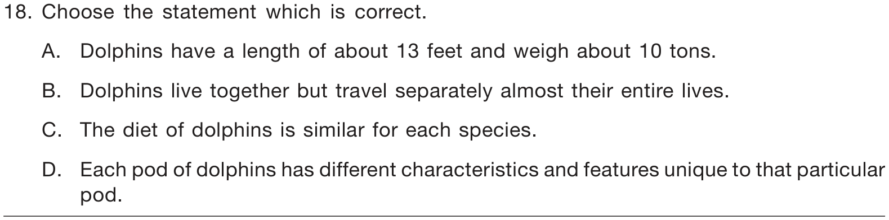
FOR QUESTIONS 16 TO 20, READ THE PASSAGE AND ANSWER THE QUESTIONS THAT FOLLOW.
Dolphins are the most beautiful, graceful, and majestic creatures to come across. They have a very friendly attitude, especially towards humans, which makes them the most likeable among all.
Dolphins are of various kinds. They are a diverse group of mammals. The most famous of all dolphins is the killer whale, and it is the most humongous of all dolphins. It has a length of about 31 feet and weighs about 10 tons. Its huge size makes it an easy predator.
Dolphins are social creatures. They are not lonesome. Their attributes are not those of a lone wolf but of a family. They live together and travel together almost their entire lives. They travel together in large swarms called pods. Each pod has different characteristics and features unique to that particular pod.
Dolphins savour smaller fish for their food. But their meals are varied and they are not just limited to fish. The diets of dolphins vary for each species. Some dolphins consume fish while others eat creatures like squids. Large mammals like killer whales prey on big and strong creatures like sea lions or seals.
Dolphins hunt together in pods using techniques like hunting wherein the dolphins surround the prey from all sides and hold it captive. Then these dolphins take turns preying on the captured prey, for filling their hunger.
Dolphins are majestic when it comes to acrobatics or gymnastics. It is just breath- taking to see them up in the air and spin. They are avid lovers of jumping around and playing. Sometimes, dolphins are seen performing tricks with their pods. They form beautiful patterns that leave the viewers mesmerized by their traits and antics. Dolphins have incredulous eyesight and hearing powers. This is why they are very aware of their surroundings. Also, their excellent senses make it hard for predators like humans to catch them easily. They use the technique of echolocation to hear underwater.
Dolphins are very fascinating creatures, and there is a lot one can be intrigued by when wondering about dolphins. They are mammals. Hence, the dolphins nurse their kids with their milk in the early stages so that the calves are healthy and strong. Dolphins are intelligent individuals who are capable of understanding and processing complex commands successfully. Many species of dolphins are protected to avoid their endangerment or extinction.
Choose the statement which is correct.
Dolphins have a length of about 13 feet and weigh about 10 tons.
Dolphins live together but travel separately almost their entire lives.
The diet of dolphins is similar for each species.
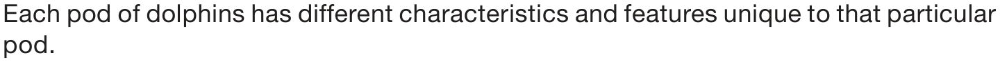
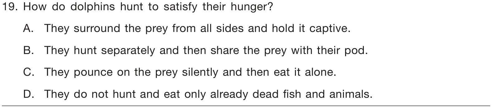
FOR QUESTIONS 16 TO 20, READ THE PASSAGE AND ANSWER THE QUESTIONS THAT FOLLOW.
Dolphins are the most beautiful, graceful, and majestic creatures to come across. They have a very friendly attitude, especially towards humans, which makes them the most likeable among all.
Dolphins are of various kinds. They are a diverse group of mammals. The most famous of all dolphins is the killer whale, and it is the most humongous of all dolphins. It has a length of about 31 feet and weighs about 10 tons. Its huge size makes it an easy predator.
Dolphins are social creatures. They are not lonesome. Their attributes are not those of a lone wolf but of a family. They live together and travel together almost their entire lives. They travel together in large swarms called pods. Each pod has different characteristics and features unique to that particular pod.
Dolphins savour smaller fish for their food. But their meals are varied and they are not just limited to fish. The diets of dolphins vary for each species. Some dolphins consume fish while others eat creatures like squids. Large mammals like killer whales prey on big and strong creatures like sea lions or seals.
Dolphins hunt together in pods using techniques like hunting wherein the dolphins surround the prey from all sides and hold it captive. Then these dolphins take turns preying on the captured prey, for filling their hunger.
Dolphins are majestic when it comes to acrobatics or gymnastics. It is just breath- taking to see them up in the air and spin. They are avid lovers of jumping around and playing. Sometimes, dolphins are seen performing tricks with their pods. They form beautiful patterns that leave the viewers mesmerized by their traits and antics. Dolphins have incredulous eyesight and hearing powers. This is why they are very aware of their surroundings. Also, their excellent senses make it hard for predators like humans to catch them easily. They use the technique of echolocation to hear underwater.
Dolphins are very fascinating creatures, and there is a lot one can be intrigued by when wondering about dolphins. They are mammals. Hence, the dolphins nurse their kids with their milk in the early stages so that the calves are healthy and strong. Dolphins are intelligent individuals who are capable of understanding and processing complex commands successfully. Many species of dolphins are protected to avoid their endangerment or extinction.
How do dolphins hunt to satisfy their hunger?
They surround the prey from all sides and hold it captive.
They hunt separately and then share the prey with their pod.
They pounce on the prey silently and then eat it alone.
They do not hunt and eat only already dead fish and animals.
Dolphins hunt together in pods using techniques like surrounding the prey from all sides and holding it captive.
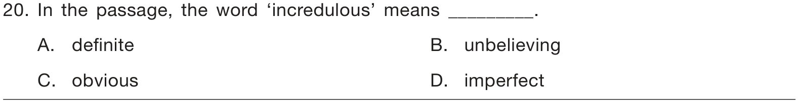
FOR QUESTIONS 16 TO 20, READ THE PASSAGE AND ANSWER THE QUESTIONS THAT FOLLOW.
Dolphins are the most beautiful, graceful, and majestic creatures to come across. They have a very friendly attitude, especially towards humans, which makes them the most likeable among all.
Dolphins are of various kinds. They are a diverse group of mammals. The most famous of all dolphins is the killer whale, and it is the most humongous of all dolphins. It has a length of about 31 feet and weighs about 10 tons. Its huge size makes it an easy predator.
Dolphins are social creatures. They are not lonesome. Their attributes are not those of a lone wolf but of a family. They live together and travel together almost their entire lives. They travel together in large swarms called pods. Each pod has different characteristics and features unique to that particular pod.
Dolphins savour smaller fish for their food. But their meals are varied and they are not just limited to fish. The diets of dolphins vary for each species. Some dolphins consume fish while others eat creatures like squids. Large mammals like killer whales prey on big and strong creatures like sea lions or seals.
Dolphins hunt together in pods using techniques like hunting wherein the dolphins surround the prey from all sides and hold it captive. Then these dolphins take turns preying on the captured prey, for filling their hunger.
Dolphins are majestic when it comes to acrobatics or gymnastics. It is just breath- taking to see them up in the air and spin. They are avid lovers of jumping around and playing. Sometimes, dolphins are seen performing tricks with their pods. They form beautiful patterns that leave the viewers mesmerized by their traits and antics. Dolphins have incredulous eyesight and hearing powers. This is why they are very aware of their surroundings. Also, their excellent senses make it hard for predators like humans to catch them easily. They use the technique of echolocation to hear underwater.
Dolphins are very fascinating creatures, and there is a lot one can be intrigued by when wondering about dolphins. They are mammals. Hence, the dolphins nurse their kids with their milk in the early stages so that the calves are healthy and strong. Dolphins are intelligent individuals who are capable of understanding and processing complex commands successfully. Many species of dolphins are protected to avoid their endangerment or extinction.
In the passage, the word ‘incredulous’ means _________.
definite
unbelieving
obvious
imperfect
In the passage, the word “incredulous” means “unbelieving”.
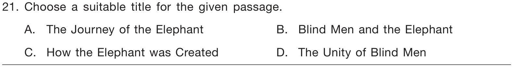
FOR QUESTIONS 21 TO 25, READ THE PASSAGE AND ANSWER THE QUESTIONS THAT FOLLOW.
By James Baldwin There were once six blind men who stood by the roadside every day and begged from the people who passed. They had often heard of elephants, but they had never seen one; for, being blind, how could they?
It so happened one morning that an elephant was walking down the road where they stood. When they were told that the great beast was before them, they asked the elephant handler to let him stop so that they might see him.
Of course, they could not see him with their eyes, but they thought that by touching him, they could learn just what kind of animal he was.
The first one happened to put his hand on the elephant’s side. “Well, well!” he said, “now I know all about this beast. He is exactly like a wall.”
The second felt only the elephant’s tusk. “My brother,” he said, “you are mistaken. He is not at all like a wall. He is round, smooth and sharp. He is more like a spear than anything else.”
The third happened to take hold of the elephant’s trunk. “Both of you are wrong,” he said. “Anybody who knows anything can see that this elephant is like a snake.” The fourth reached out his arms and grasped one of the elephant’s legs. “Oh, how blind you are!” he said. “It is very plain to me that he is round and tall like a tree.” The fifth was a very tall man, and he chanced to take hold of the elephant’s ear. “The blindest man ought to know that this beast is not like any of the things that you named,” he said. “He is exactly like a huge fan.”
The sixth was indeed very blind, and it took some time before he could find the elephant at all. At last, he seized the animal’s tail. “O foolish fellows!” he cried. “You surely have lost your senses. This elephant is not like a wall, a spear, a snake, or a tree; neither is he like a fan. But any man with a particle of sense can see that he is exactly like a rope.”
Then the elephant moved on, and the six blind men sat by the roadside all day and quarrelled about him. Each believed that he knew just how the animal looked, and each called the others hard names because they did not agree with him.
Choose a suitable title for the given passage.
The Journey of the Elephant
Blind Men and the Elephant
How the Elephant was Created
The Unity of Blind Men
The suitable title for the given passage is “Blind Men and the Elephant”.
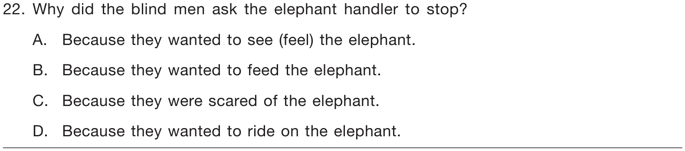
FOR QUESTIONS 21 TO 25, READ THE PASSAGE AND ANSWER THE QUESTIONS THAT FOLLOW.
By James Baldwin There were once six blind men who stood by the roadside every day and begged from the people who passed. They had often heard of elephants, but they had never seen one; for, being blind, how could they?
It so happened one morning that an elephant was walking down the road where they stood. When they were told that the great beast was before them, they asked the elephant handler to let him stop so that they might see him.
Of course, they could not see him with their eyes, but they thought that by touching him, they could learn just what kind of animal he was.
The first one happened to put his hand on the elephant’s side. “Well, well!” he said, “now I know all about this beast. He is exactly like a wall.”
The second felt only the elephant’s tusk. “My brother,” he said, “you are mistaken. He is not at all like a wall. He is round, smooth and sharp. He is more like a spear than anything else.”
The third happened to take hold of the elephant’s trunk. “Both of you are wrong,” he said. “Anybody who knows anything can see that this elephant is like a snake.” The fourth reached out his arms and grasped one of the elephant’s legs. “Oh, how blind you are!” he said. “It is very plain to me that he is round and tall like a tree.” The fifth was a very tall man, and he chanced to take hold of the elephant’s ear. “The blindest man ought to know that this beast is not like any of the things that you named,” he said. “He is exactly like a huge fan.”
The sixth was indeed very blind, and it took some time before he could find the elephant at all. At last, he seized the animal’s tail. “O foolish fellows!” he cried. “You surely have lost your senses. This elephant is not like a wall, a spear, a snake, or a tree; neither is he like a fan. But any man with a particle of sense can see that he is exactly like a rope.”
Then the elephant moved on, and the six blind men sat by the roadside all day and quarrelled about him. Each believed that he knew just how the animal looked, and each called the others hard names because they did not agree with him.
Why did the blind men ask the elephant handler to stop?
Because they wanted to see (feel) the elephant.
Because they wanted to feed the elephant.
Because they were scared of the elephant.
Because they wanted to ride on the elephant.
The blind men asked the elephant handler to stop because they wanted to see (feel) the elephant.
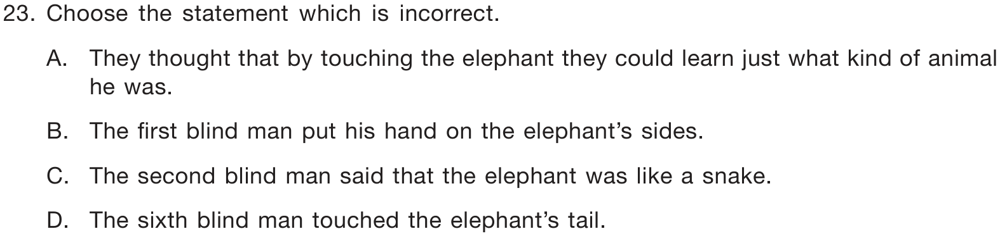
FOR QUESTIONS 21 TO 25, READ THE PASSAGE AND ANSWER THE QUESTIONS THAT FOLLOW.
By James Baldwin There were once six blind men who stood by the roadside every day and begged from the people who passed. They had often heard of elephants, but they had never seen one; for, being blind, how could they?
It so happened one morning that an elephant was walking down the road where they stood. When they were told that the great beast was before them, they asked the elephant handler to let him stop so that they might see him.
Of course, they could not see him with their eyes, but they thought that by touching him, they could learn just what kind of animal he was.
The first one happened to put his hand on the elephant’s side. “Well, well!” he said, “now I know all about this beast. He is exactly like a wall.”
The second felt only the elephant’s tusk. “My brother,” he said, “you are mistaken. He is not at all like a wall. He is round, smooth and sharp. He is more like a spear than anything else.”
The third happened to take hold of the elephant’s trunk. “Both of you are wrong,” he said. “Anybody who knows anything can see that this elephant is like a snake.” The fourth reached out his arms and grasped one of the elephant’s legs. “Oh, how blind you are!” he said. “It is very plain to me that he is round and tall like a tree.” The fifth was a very tall man, and he chanced to take hold of the elephant’s ear. “The blindest man ought to know that this beast is not like any of the things that you named,” he said. “He is exactly like a huge fan.”
The sixth was indeed very blind, and it took some time before he could find the elephant at all. At last, he seized the animal’s tail. “O foolish fellows!” he cried. “You surely have lost your senses. This elephant is not like a wall, a spear, a snake, or a tree; neither is he like a fan. But any man with a particle of sense can see that he is exactly like a rope.”
Then the elephant moved on, and the six blind men sat by the roadside all day and quarrelled about him. Each believed that he knew just how the animal looked, and each called the others hard names because they did not agree with him.
Choose the statement which is incorrect.
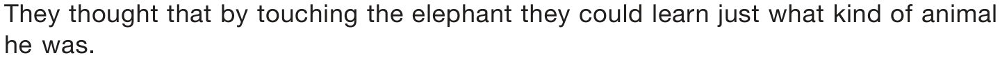
The first blind man put his hand on the elephant’s sides.
The second blind man said that the elephant was like a snake.
The sixth blind man touched the elephant’s tail.
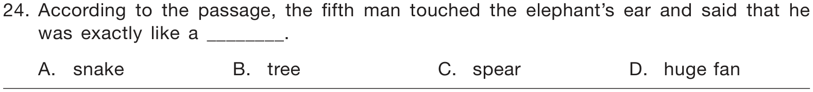
FOR QUESTIONS 21 TO 25, READ THE PASSAGE AND ANSWER THE QUESTIONS THAT FOLLOW.
By James Baldwin There were once six blind men who stood by the roadside every day and begged from the people who passed. They had often heard of elephants, but they had never seen one; for, being blind, how could they?
It so happened one morning that an elephant was walking down the road where they stood. When they were told that the great beast was before them, they asked the elephant handler to let him stop so that they might see him.
Of course, they could not see him with their eyes, but they thought that by touching him, they could learn just what kind of animal he was.
The first one happened to put his hand on the elephant’s side. “Well, well!” he said, “now I know all about this beast. He is exactly like a wall.”
The second felt only the elephant’s tusk. “My brother,” he said, “you are mistaken. He is not at all like a wall. He is round, smooth and sharp. He is more like a spear than anything else.”
The third happened to take hold of the elephant’s trunk. “Both of you are wrong,” he said. “Anybody who knows anything can see that this elephant is like a snake.” The fourth reached out his arms and grasped one of the elephant’s legs. “Oh, how blind you are!” he said. “It is very plain to me that he is round and tall like a tree.” The fifth was a very tall man, and he chanced to take hold of the elephant’s ear. “The blindest man ought to know that this beast is not like any of the things that you named,” he said. “He is exactly like a huge fan.”
The sixth was indeed very blind, and it took some time before he could find the elephant at all. At last, he seized the animal’s tail. “O foolish fellows!” he cried. “You surely have lost your senses. This elephant is not like a wall, a spear, a snake, or a tree; neither is he like a fan. But any man with a particle of sense can see that he is exactly like a rope.”
Then the elephant moved on, and the six blind men sat by the roadside all day and quarrelled about him. Each believed that he knew just how the animal looked, and each called the others hard names because they did not agree with him.
According to the passage, the fifth man touched the elephant’s ear and said that he was exactly like a ________.
snake
tree
spear
huge fan
According to the passage, the fifth blind man touched the elephant’s ear and said that he was exactly like a huge fan.
FOR QUESTIONS 21 TO 25, READ THE PASSAGE AND ANSWER THE QUESTIONS THAT FOLLOW.
By James Baldwin There were once six blind men who stood by the roadside every day and begged from the people who passed. They had often heard of elephants, but they had never seen one; for, being blind, how could they?
It so happened one morning that an elephant was walking down the road where they stood. When they were told that the great beast was before them, they asked the elephant handler to let him stop so that they might see him.
Of course, they could not see him with their eyes, but they thought that by touching him, they could learn just what kind of animal he was.
The first one happened to put his hand on the elephant’s side. “Well, well!” he said, “now I know all about this beast. He is exactly like a wall.”
The second felt only the elephant’s tusk. “My brother,” he said, “you are mistaken. He is not at all like a wall. He is round, smooth and sharp. He is more like a spear than anything else.”
The third happened to take hold of the elephant’s trunk. “Both of you are wrong,” he said. “Anybody who knows anything can see that this elephant is like a snake.” The fourth reached out his arms and grasped one of the elephant’s legs. “Oh, how blind you are!” he said. “It is very plain to me that he is round and tall like a tree.” The fifth was a very tall man, and he chanced to take hold of the elephant’s ear. “The blindest man ought to know that this beast is not like any of the things that you named,” he said. “He is exactly like a huge fan.”
The sixth was indeed very blind, and it took some time before he could find the elephant at all. At last, he seized the animal’s tail. “O foolish fellows!” he cried. “You surely have lost your senses. This elephant is not like a wall, a spear, a snake, or a tree; neither is he like a fan. But any man with a particle of sense can see that he is exactly like a rope.”
Then the elephant moved on, and the six blind men sat by the roadside all day and quarrelled about him. Each believed that he knew just how the animal looked, and each called the others hard names because they did not agree with him.
According to the passage, the fourth blind man grasped the elephant’s ______.
trunk
tusk
leg
tail
According to the passage, the fourth blind man grasped the elephant’s leg.
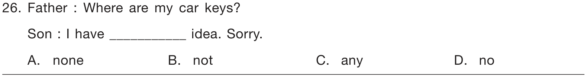
FOR QUESTIONS 26 TO 30, CHOOSE THE MOST SUITABLE OPTION TO COMPLETE EACH CONVERSATION.
Father : Where are my car keys?
Son : I have ___________ idea. Sorry.
none
not
any
no
The appropriate option “no” is to be used to complete the phrase “no idea”, which means “to not know something”.
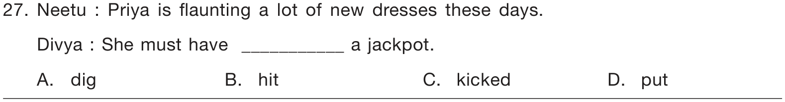
FOR QUESTIONS 26 TO 30, CHOOSE THE MOST SUITABLE OPTION TO COMPLETE EACH CONVERSATION.
Neetu : Priya is flaunting a lot of new dresses these days.
Divya : She must have ___________ a jackpot.
dig
hit
kicked
put
The suitable verb “hit” is to be used to complete the phrase “hit a jackpot”, which means “to win a big profit” in the sentence.
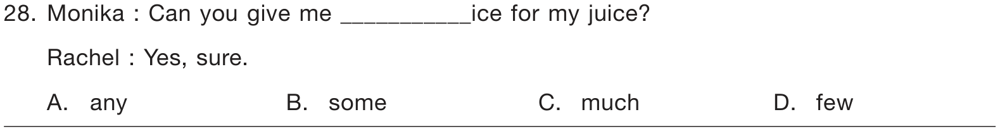
FOR QUESTIONS 26 TO 30, CHOOSE THE MOST SUITABLE OPTION TO COMPLETE EACH CONVERSATION.
Monika : Can you give me ___________ice for my juice?
Rachel : Yes, sure.
any
some
much
few
The quantitative adjective “some” is to be used to describe a particular amount of “ice” in the sentence.
FOR QUESTIONS 26 TO 30, CHOOSE THE MOST SUITABLE OPTION TO COMPLETE EACH CONVERSATION.
Samy : Did you ___________ it to the finals?
make
makes
made
making
The auxiliary verb “did” indicates that the sentence is in the past tense, and with “did”, the base form of the verb is always used, so the correct verb to be used is “make”.
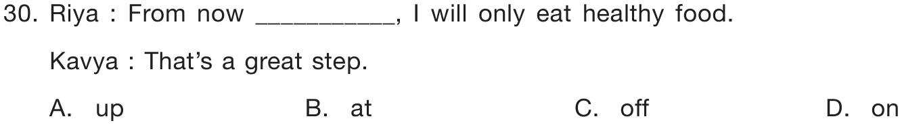
FOR QUESTIONS 26 TO 30, CHOOSE THE MOST SUITABLE OPTION TO COMPLETE EACH CONVERSATION.
Riya : From now ___________, I will only eat healthy food.
Kavya : That’s a great step.
up
at
off
on
The appropriate preposition “on” is to be used to indicate “starting from this moment to the future” in the sentence.
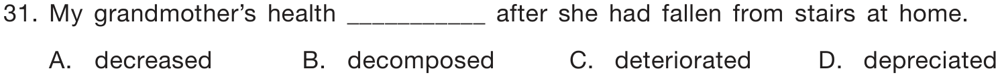
FOR QUESTIONS 31 AND 32, CHOOSE THE CORRECT OPTION TO FILL IN THE BLANK.
My grandmother’s health ___________ after she had fallen from stairs at home.
decreased
decomposed
deteriorated
depreciated
The suitable verb “deteriorated” is to be used, which means “to become worse” in the sentence.
FOR QUESTIONS 31 AND 32, CHOOSE THE CORRECT OPTION TO FILL IN THE BLANK.
We ___________ hear about robbery incidents in this area. It’s not safe.
most
often
never
random
The suitable adverb of frequency “often” is to be used to modify the action of hearing in the sentence.
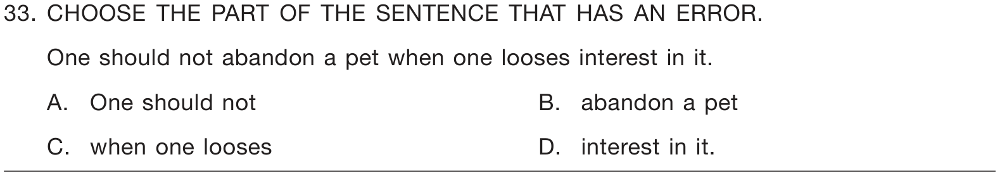
CHOOSE THE PART OF THE SENTENCE THAT HAS AN ERROR. One should not abandon a pet when one looses interest in it.
One should not
abandon a pet
when one looses
interest in it.
The correct sentence is: One should not abandon a pet when one loses interest in it.
CHOOSE THE CORRECT SYNONYM OF DEFILE.
Corrupt
Esteem
Hallow
Upgrade
The synonym of the word “defile” is “corrupt”, as they both mean “spoiling the goodness of something”.
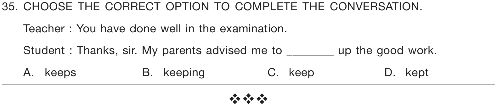
CHOOSE THE CORRECT OPTION TO COMPLETE THE CONVERSATION.
Teacher : You have done well in the examination.
Student : Thanks, sir. My parents advised me to ________ up the good work.
keeps
keep
kept
The suitable verb to be followed by the preposition “to” is “keep” in the sentence because with “to” the base (first) form of the verb is used.